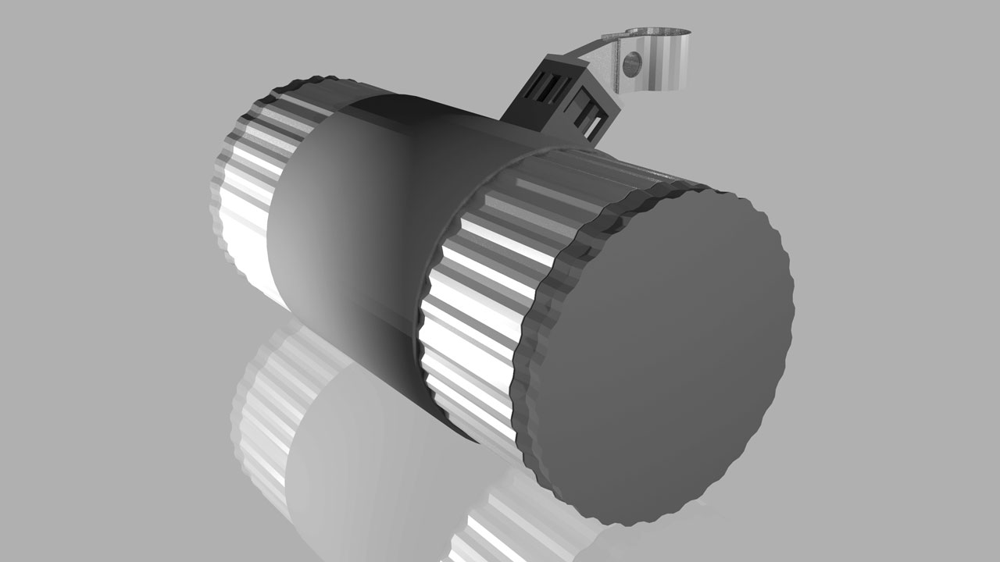

Wenzel Massag
It's our vision of the future that guides our decisions towards itself.
Our present is just the result.
It's our vision of the future that guides our decisions towards itself.
Our present is just the result.
Last week I had started to go into more detail on the saddle-bag. (See last week…) This week our assignment was to select one concept using feedback, I decided I would merge some of the functionality of two concepts, the saddle-bag and the normal bag.
To combine the mobility of the normal bag with integrated battery and charging ports with biking, I decided the saddle bag should be easy to detach, so it could be put into a bag and used to charge when you're away from the bike. Here is a cross section of the artifct I came up with , the JuiceCan. Its roughly as big as a medium sized water bottle, the exterior is aluminium and rubber. The water tight seal can be screwed off to reveal a coloured foam that holds your phone etc. in place when you use it biking. Inside is a USB-port a huge cylindrical battery and at the very end the electronics to regulate the electricity. the USB-port is two way and can also be used to charge the JuiceCan.
For the survey I did some renderings, here they are in high resolution:

To test the concept I decided to create a purchase intent survey, the results were mixed and I love that some of the responses contained valuable feedback! So here are three of them: